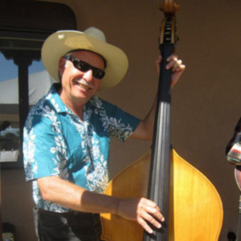

Dave Klaus
(bass) Dave Klaus has been playing upright bass for many years and lays down that danceable rhythm to the Tumbleweeds signature sound. The traditional Texas Roadhouse Swing and Classic Country Western song styles of the Tumbleweeds provide Dave the unique opportunity to add his 5-string Upright tones to this great band's repertoire. Although Dave has travelled the world and performed with many bands in a variety of settings, the Tumbleweeds remain his favorite musical friends and collaborators.